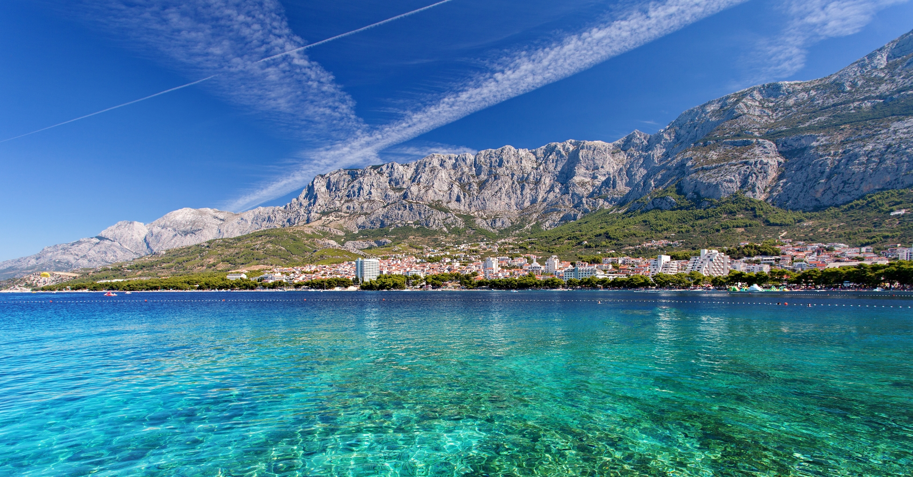
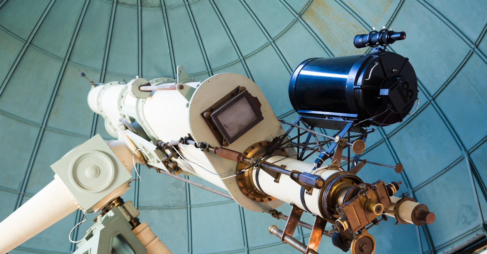
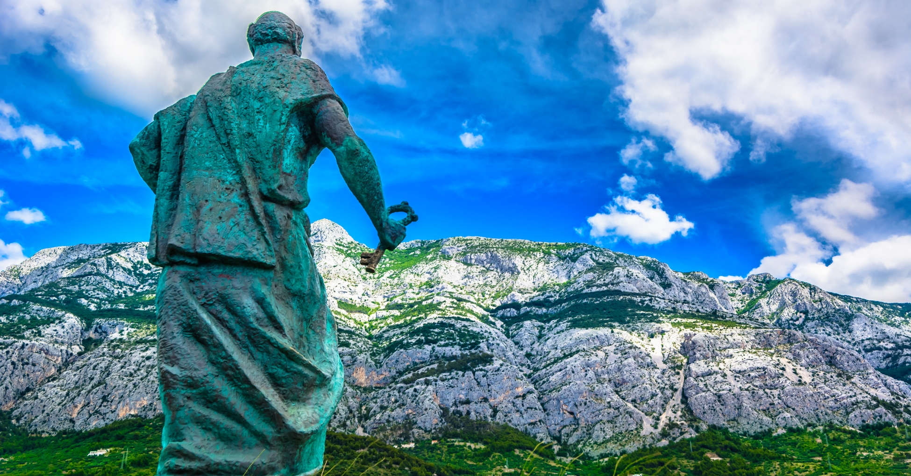

Biser hrvatske obale koji će vas zapanjiti svojom lepotom i raznolikošću.
Ovaj grad ima nešto za svakoga, bilo da ste ljubitelj sunca i plaže, avanturističkog duha ili pak gurman koji uživa u lokalnoj kuhinji.
Zamislite se kako šetate dugim šetalištima obasjanim suncem dok udišete sveži morski vazduh i uživate u pogledu na kristalno čisto more.
Makarska je upravo takvo mjesto - pravi raj za ljubitelje plaže i vodenih sportova.
Plaže su očaravajuće, a more je osvežavajuće i idealno za plivanje ili ronjenje.
No, Makarska je mnogo više od plaža. Zahvaljujući spektakularnom planinskom lancu Biokovo, ovde ćete pronaći i prekrasne planinske staze koje vode do neverovatnih vidikovaca sa kojih puca pogled na celi grad i okolinu.
To je prilika za avanturiste da istraže netaknutu prirodu i osete mir i tišinu koju nudi ova planinska oaza.
A kad ogladnite, ne propustite priliku da uživate u bogatstvu ukusa dalmatinske kuhinje u jednom od lokalnih restorana ili konoba.
Ovde ćete pronaći sveže ulovljenu ribu, ukusne morske plodove, domaće maslinovo ulje i vrhunska vina koja će zadovoljiti i najizbirljivije nepce.
Ali to nije sve! Makarska nudi i živahnu noćnu scenu sa brojnim barovima, klubovima i lounge barovima koji će vas zabaviti do kasno u noć.
Upoznajte lokalno stanovništvo, zaplešite uz ritam muzike i uživajte u opuštenoj atmosferi ovog prekrasnog grada.


Ovo su naše omiljene stvari koje možete raditi u Makarskoj:
1. Posetite ogradu ljubavi
Ograda ljubavi u Makarskoj predstavlja posebno mesto na kojem se posetioci i lokalci odlučuju da simbolično obeleže svoju ljubav.
Nalazi se duž obale, a na lancima ograde su zaključani brojni katanci, svaki sa svojom pričom.
Ova tradicija potiče iz različitih delova sveta, a u Makarskoj je posebno omiljena.
Uz prelep pogled na Jadransko more i ugodnu atmosferu, Ograda ljubavi postala je nezaobilazna tačka za zaljubljene parove i romantične duše koje posećuju ovaj predivni grad na hrvatskoj obali.

Posetite astronomsku opservatoriju
2. Pogledajte film u bioskopu na otvorenom
Da li ste znali da Makarska ima astronomsku opservatoriju?
Za one koji su zainteresovani za svemirska istraživanja ili jednostavno radoznali putnici, posetite opservatoriju koja se nalazi samo 50 metara od centra grada!
Makarska ima sreću da doživi niske nivoe svetlosnog zagađenja i sa obzirom na svoju odličnu lokaciju blizu mora, okruženu borovom šumom, preporučujemo posetu opservatoriji u sumrak.
Imaćete priliku da vidite spektakularno zvezdano nebo koje se može opisati samo kao vanzemaljsko!
3. Planinarenje planinom Biokovo
Planinarenje na planini Biokovo iznad Makarske pruža nezaboravno iskustvo za sve ljubitelje prirode i avanture.
Biokovo je impresivan planinski lanac koji se uzdiže iznad obale Dalmacije, pružajući spektakularne pejzaže i neverovatne vidike.
Jedan od najpopularnijih staza za planinarenje je staza koja vodi do najvišeg vrha Biokova - Svetog Jurea, koji se uzdiže na visinu od 1.762 metra nadmorske visine.
Ova staza nudi izazovno ali uzbudljivo planinarenje kroz guste borove šume i strmije delove terena.
Na vrhu Svetog Jurea, posetioci će biti nagrađeni zadivljujućim panoramskim pogledom na obalu Jadranskog mora, Makarsku rivijeru i okolne planinske vrhove.
Ako je dan dovoljno vedar možda ćete videti čak i delove Italije i Bosne.
Najbolja mesta za izlazak u Makarskoj:
Kada je reč o mestima za izlazak, Makarska možda nije najpoznatija destinacija među putnicima, ali ima neke od najuzbudljivijih noćnih lokacija u Hrvatskoj.
Od klubova u pećinama do otvorenih prostora, očekujte neočekivano od Makarske!
1. 1. Club Deep
Klub Deep je neosporno najpoznatiji i najpopularniji noćni klub u Makarskoj, a razlozi za to su očigledni.
Smešten u pećini duž obale Makarske, ovaj klub privlači ljubitelje zabave iz svih krajeva koji dolaze da uživaju u house ritmovima i obilju pića.
2. Petar Pan
Makarska je prepuna klubova na otvorenom, a jedno od omiljenih mesta za provod je Petar Pan.
Smešten tik uz plažu, ovaj klub nudi žurke uz zvuke rnb-a, elektronske i plesne muzike, dok se družite sa saputnicima i lokalnim stanovnicima Makarske do ranih jutarnjih sati!
Gde jesti u Makarskoj:
Kao i u većini gradova u Hrvatskoj, restorani u Makarskoj nude ukusnu hranu koja će oduševiti vaše nepce.
Tik uz obalu možete pronaći najsvežiji ulov dana ili se odlučiti za bogatu ponudu hrvatske kuhinje.
Ako vas zanima gde se zaustaviti, svakako preporučujemo da pitate lokalce za njihove omiljene i tajne preporuke!
1. Domina
Ljubitelji pizze, obratite pažnju! Omiljena među turistima, Domina je poznata po odličnoj usluzi i još boljoj pici.
Idealno mesto za opuštanje i punjenje energije uz parče po vašem izboru.
2. Briskula
U centru glavnog trga Makarske, očekuje vas lokalni favorit koji nudi mediteransku kuhinju obogaćenu tradicionalnim jelima uz hrvatska vina i domaće rakije.
Opustite se uz predivan pogled na Jadransko more i lokalno vino u ruci dok završavate dan!
3. Freyja
Jedinstvena i kreativna kuhinja je ono što izdvaja restoran Freyja od drugih u Makarskoj.
Naziv restorana inspirisan je nordijskom mitologijom, odajući počast strasti i lepoti, a to se odražava i u njihovim jelima.
Tokom dana možete uživati u opuštenoj atmosferi i konceptu ulične hrane, dok večernje čari donose sofisticiranije doživljaje sa mediteranskim sastojcima i modernim tumačenjem tradicionalnih dalmatinskih recepata.
Posetite najlepše plaže u Makarskoj:
Obzirom da se Makarska Rivijera proteže na preko 60 kilometara duž obale, očekuje vas niz spektakularnih plaža duž njenih obala!
Evo nekoliko naših omiljenih koje biste trebali istražiti!
1. Plaža Makarska
2. Baška Voda
3. Plaža Nugul
